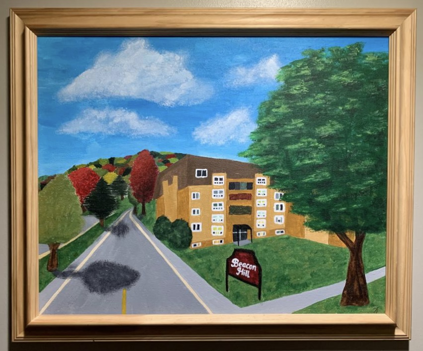
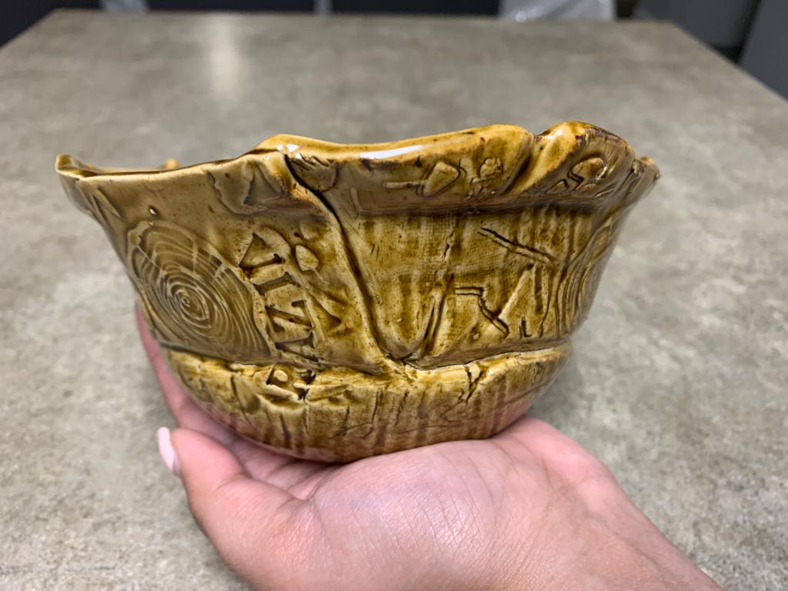
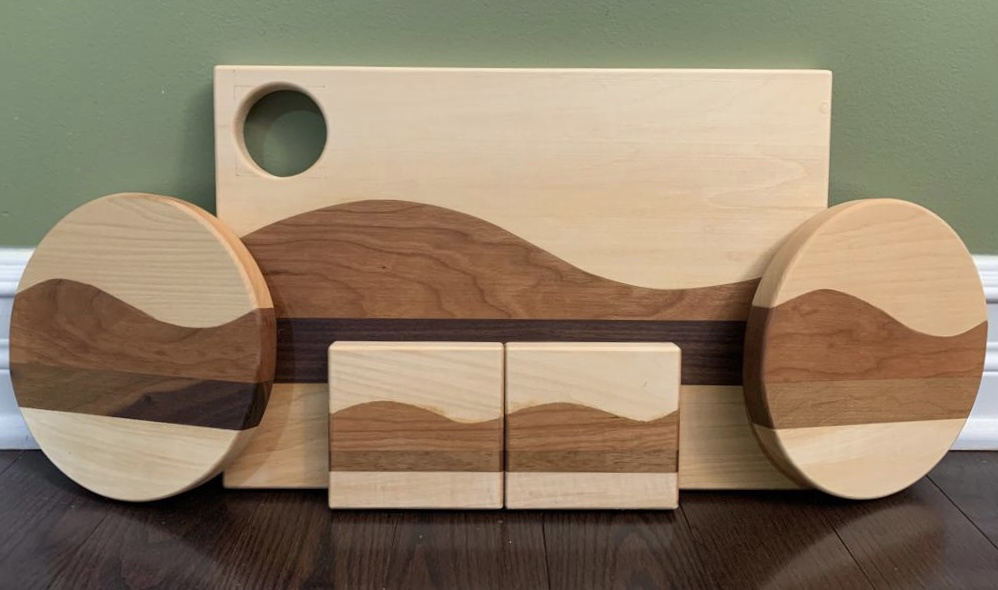
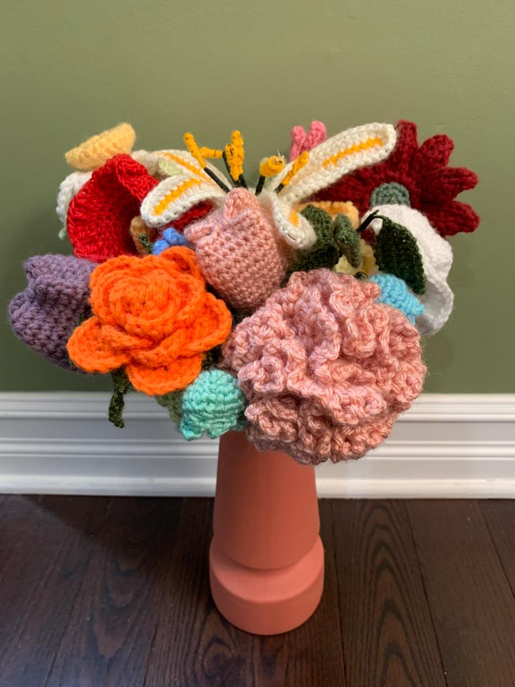
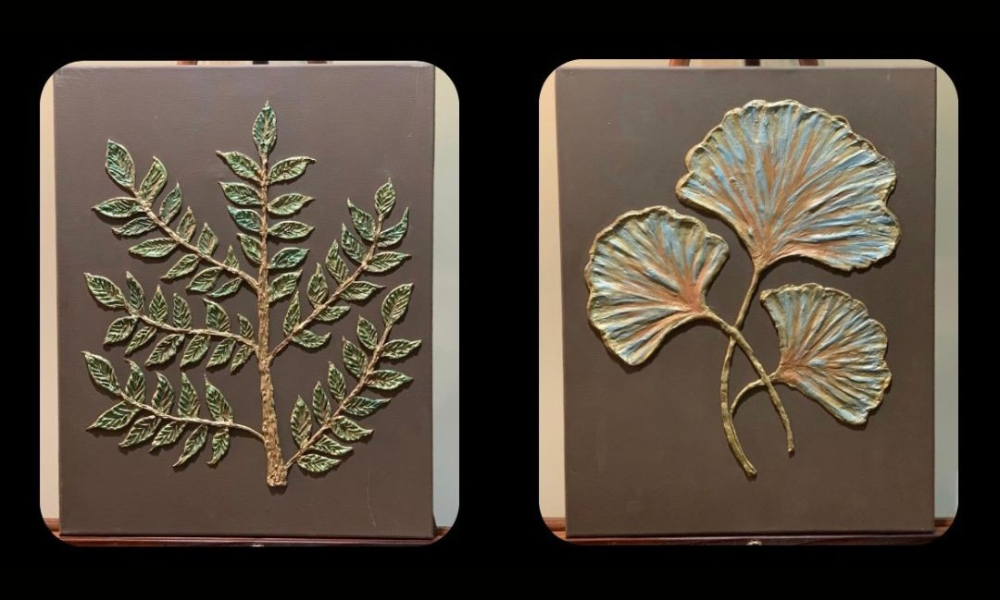
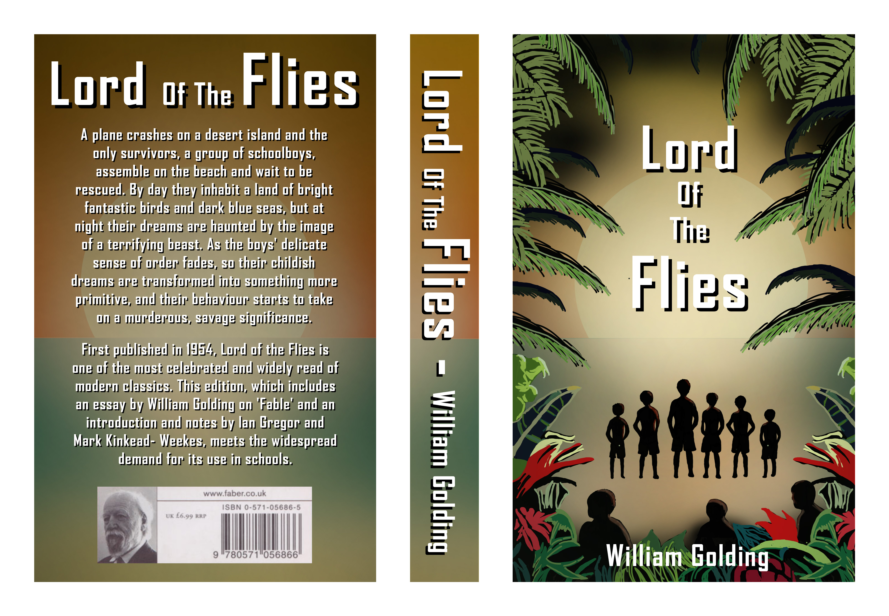
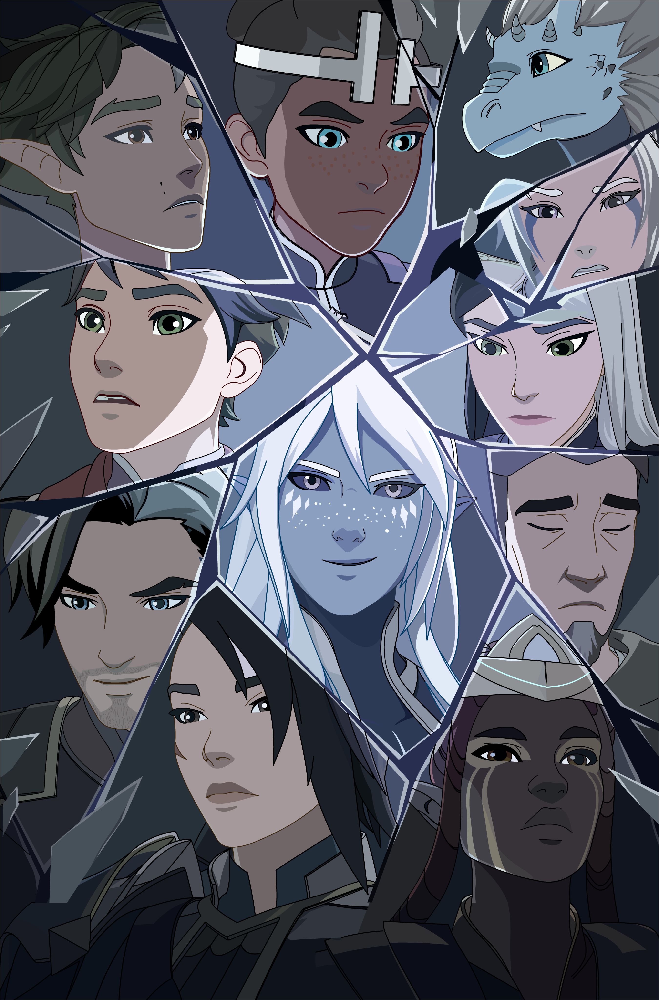

Welcome to My Creative Universe
Click below to begin your journey through my work.
Road To Heaven
I presented my dad with this special birthday gift, a painting named "Road to Heaven,” which depicts his childhood home in Beacon Hill, Ottawa. Not only do I have countless childhood memories from my visits to Beacon Hill’s parks, it’s also my father's most cherished place on Earth. For this artwork, I used new tools like sponges to create the clouds, and tried shading techniques for the first time. I created the building and tree in the foreground first before painting the smaller details in the landscape.
Pottery
I participated in a handbuilding workshop at the Gloucester Pottery School. Despite the limited time, I came up with a wonderful idea — to inscribe all my grandparents' names into the clay. Following the simultaneous instructions of the facilitator, I flattened the clay and used various tools to create designs. I then cut the clay in different shapes and pieced it together in a bowl, filling the gaps and avoiding excessive pressure to preserve the exterior artwork. This experience sparked a newfound interest in pottery, which led me back to the school to try my hand at the pottery wheel.
Scribble Effects
My scribble effect video pushed my imagination and creativity. Watching the footage initially, I could already envision which elements to highlight with visual effects. With 24 frames per second in the clip, I worked on around 180 frames total. It was a labour of love as each frame required anywhere from a few seconds to several minutes to complete. I included a mix of paint strokes, some that flowed with the movements of the dancers, others that popped out at random. This process required a lot of patience, but was worth it in the end.
Woodshop
In 11th grade, I created a matching set of coasters and a cutting board for a woodshop project. I’ve always enjoyed nature and so I decided to incorporate my love for landscapes in my project. I used the SketchUp application to design the shapes and sizes of the woods. For the cutting board, I created a sun-shaped hole and used different wood pieces to represent the sky, mountains, beach, and ocean. I carried this theme over to the coasters, making it a cohesive set.
Crochet
This special project, a welcome home gift for my late grandmother, involved my cousin, aunt, and me. Inspired by my grandmother's dislike for wilting flowers, we aimed to give her a bouquet that never wilts. We drew inspiration from online bouquets, but crafted our own unique arrangement, without following any specific guide or pattern. We used metal rods and florist’s tape to create the stems. We also considered my grandmother's dislike for waste, so we only used leftover scrap yarn to create all 18 flowers. It's a unique, sustainable and everlasting project.
Textured paintings
I challenged myself to step out of my comfort zone and embraced a new art form – textured painting. I began by mixing the plaster paste, filling it in a piping bag, and then creating freeform designs on a canvas. I used wet paint brushes and spatulas to create shapes and textures in the plaster. I experimented by mixing different shades of acrylic paint, gloss varnish and metallic pigment powders, which I painted over the dried plaster. This project inspired me to further explore adding texture and dimension to my future paintings.
Stop Motion
At the time I was working on this project for my Communication Technology class, many of my family members were going on vacation and I found myself constantly thinking about travelling. This led to an idea for my stop motion project: a paper plane’s journey, from creation to takeoff. I took around 250 photographs of the paper plane in various positions, which I then animated. I especially enjoy the symbolism of the plane taking off, a sort of open ending and also a metaphor for my own upcoming adventures.
Book Cover Redesign
For this project, I reimagined the book cover for Lord of the Flies by William Golding using Photoshop. Inspired by the novel’s haunting atmosphere and psychological depth, I illustrated the silhouettes of the boys surrounded by lush, ominous jungle leaves under a muted sunset glow. I used the gradient tool to build the dramatic lighting and combined it with hand-painted textures and shadows using the brush tool. The bold, blocky typography mimics the original’s tone while modernizing its aesthetic. This redesign challenged me to translate literary tension into visual storytelling and pushed my skills in composition, color, and thematic design.
Vector Art
Inspired by The Dragon Prince, this piece reimagines key characters caught in a moment of tension, framed by fractured glass to symbolize division and inner conflict. I carefully arranged each expression to reflect the emotional weight of the story while keeping the overall composition balanced and dramatic. The clean vector style maintains the essence of the show, while the broken layout adds a personal twist. Created in Adobe Animate, the project pushed me to explore storytelling through shape, color, and structure. It taught me how visual arrangement alone can capture relationships, emotion, and narrative depth.
Comic Drawing
This two-page comic trailer illustrates key moments from Muhammad Ali’s life, focusing on his courage both inside and outside the boxing ring. Using traditional comic techniques in a bold black-and-white style, I highlighted his moral conviction, his refusal to be drafted, and the strength of his voice in the face of injustice. I carefully structured each panel to follow a cinematic rhythm, blending expression, symbolism, and historical quotes. This project helped me explore sequential art and taught me how to communicate powerful stories visually. It’s a tribute to Ali’s legacy as both a fighter and a fearless human rights advocate.